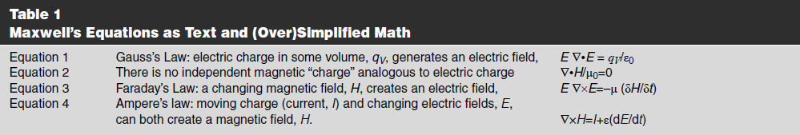
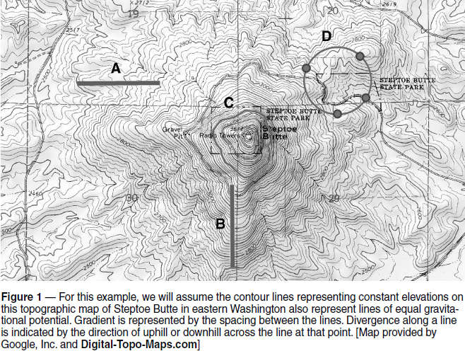

Experiment #178 — Maxwell’s Equations — Grad, Div, Curl
Given their fundamental nature, it is natural to think of Maxwell’s equations as describing laws of nature. They do, but it was not Maxwell who discovered them. As we learned in Experiments #117 and 118, those insights came from Faraday, Gauss, and Ampere.1 What Maxwell contributed was to see the relationships of electric and magnetic fields, voltage and current, as different components of a single natural phenomenon — electromagnetism. He simplified the relationships down to the level of “first principles” that aren’t derived from any other more fundamental ideas — these are bedrock descriptions of the universe.
In the process, he came to understand that electric charge and magnetism are deeply related. After Maxwell, it became apparent that they are just different ways in which electromagnetic energy interacts with matter as it moves through space. An electron (or any electric charge) can respond to electric fields or magnetic fields. The same electron generates an electric field or, if in motion, a magnetic field.
The key is “motion.” If anything could be considered “Maxwell’s Law” it would be his modification to Ampere’s Law. He made that equation symmetrical with Faraday’s Law so that a time-changing magnetic field was linked to an induced electromotive force or voltage. This was the true spark of genius (so to speak), going beyond Faraday’s Law to suggest that a time-changing electric field can produce a current.
Maxwell then made a second leap from “time-changing” to “moving,” and got a wave. (Faraday had suggested there might be waves associated with induction, but hadn’t incorporated electric fields into the idea.) As they say, this changed everything. As Einstein himself acknowledged, this equivalence of motion and changes with time lies at the heart of relativity and its equivalence of space and time. (Pretty deep stuff for a ham radio magazine, I must say.)
Maxwell’s original 20 equations were difficult to understand. We owe their current form to Oliver Heaviside, who simplified them to four equations using modern notation in 1885.2, 3
Table 1 explains as text what each of Maxwell’s equations says and then states them mathematically. (Rautio’s explanations are more detailed and the equations shown here are somewhat over-simplified.) This is the mountain. The following sections cover three basic math concepts that are used to express the equations. These are your climbing gear.

Gradient (∇)
Let’s start with gradient, which is pretty easy to visualize. Gradient, represented by the ∇ or nabla symbol, is a measure of how fast some parameter changes with respect to some other parameter. For example, a steep hill has a large gradient of height with respect to distance. (The word “grade” springs from the same root as “gradient.”)
In ham radio, one gradient that concerns us is a change in voltage over distance. An insulator’s breakdown voltage — the maximum gradient the insulator can withstand — is expressed in volts per inch. This is why high-voltage circuits and components have rounded or smooth edges and points — to reduce the voltage gradient near these surfaces, avoiding arcs and corona.
Figure 1 is an illustration of gradient on a topographic map, which measures gravitational potential, also known as “elevation.” The two blue lines, A and B, each represent a horizontal distance of 2,000 feet. Along which line is the gradient of elevation (vertical distance per horizontal distance) the greatest from end to end? The heavy brown contour lines are spaced 100 feet apart, so the net gradient along A from end to end is 200 feet in 2,000 feet or 0.1 feet per foot. B touches six heavy brown lines for a gradient of 600 / 2,000 = 0.3 feet per foot. The gradient symbol in Maxwell’s equations includes the gradient in all three dimensions, not just two as in this map.

Divergence (•)
Divergence, represented by the • symbol, can also be illustrated on a topographic map. Divergence describes whether a value, such as gravitational potential (elevation) or electrical potential (voltage), is increasing or decreasing through a curve or across a surface. Start with the contour circuit C, which surrounds the central peak, and imagine a rolling ball as your “gravity-o-meter.” What would a ball do if placed on the contour circuit line? Everywhere around circuit C, gravitational potential increases to the “inside” and decreases “outside,” so the ball would roll away from the central peak. We would say there is a high positive divergence in gravitational potential (elevation) across the circuit. (If the circuit was drawn around a sinkhole, there would be a high negative divergence.)
The case of the circuit labeled D is not as simple. Part of the circle is on the slope of a nearby peak, two parts are in separate parts of a valley, and some is on the slopes of the central peak. Depending on location, a ball dropped on the circuit would roll toward the interior (1 and 6 o’clock positions, negative divergence), away from the interior (4 o’clock, positive divergence), or along the circuit (10 o’clock, zero divergence). Figuring out whether net divergence was positive or negative would require you to sum it up at each point around the circuit. Mathematically, this is an integration around the whole circuit, and it is shown as an integration symbol with a small circle in the middle (see Rautio’s website in Note 3). Like the gradient, divergence in Maxwell’s equations includes all three dimensions.
Curl (×)
The final tool in the set is curl, and that is something we can’t show on a topographic map. Curl is derived from circulation, which could be understood as the push from gravity along a closed path such as one of our contour circles. Curl is denoted by the × symbol, which is also used to represent the mathematical cross product of two vectors.
Along circuit C in Figure 1, you would get no push anywhere because the gravitational potential at each point (elevation) is the same. Along circuit D, the push might be in one direction then in the other, but around the whole circuit, the net circulation is zero. Otherwise you could go up or down forever like an Escher staircase.
Curl is the amount of circulation per unit of area, and would be experienced as a twisting or turning force. You can experience curl for yourself. Anyone with boating experience has experienced curl when the current vectors at one end of the vessel are stronger (or have a different direction) than at the other. The twisting force shows the curl of the current’s vector field across the surface of the water. Whirlpools and hurricanes also illustrate curl.4
Gradient, divergence, and curl play a role in our day-to-day radio operating and are illustrated by the online video in Note 5. We’ll take a closer look at the equations and find out how they lead to electromagnetic waves in the next column.
Notes
1All previous “Hands-On Radio” experiments are available to ARRL members at www.arrl.org/hands-on-radio.
2en.wikipedia.org/wiki/Oliver_Heaviside and Paul Nahin, Oliver Heaviside: The Life, Work, and Times of an Electrical Genius of the Victorian Age, IEEE, 2002.
3J. Rautio, AJ3K, “The Long Road to Maxwell’s Equations,” Dec. 2014, IEEE Spectrum, pp. 36 – 40, 54 – 56, and www.microwaves101.com/encyclopedias/maxwell-s-equations.